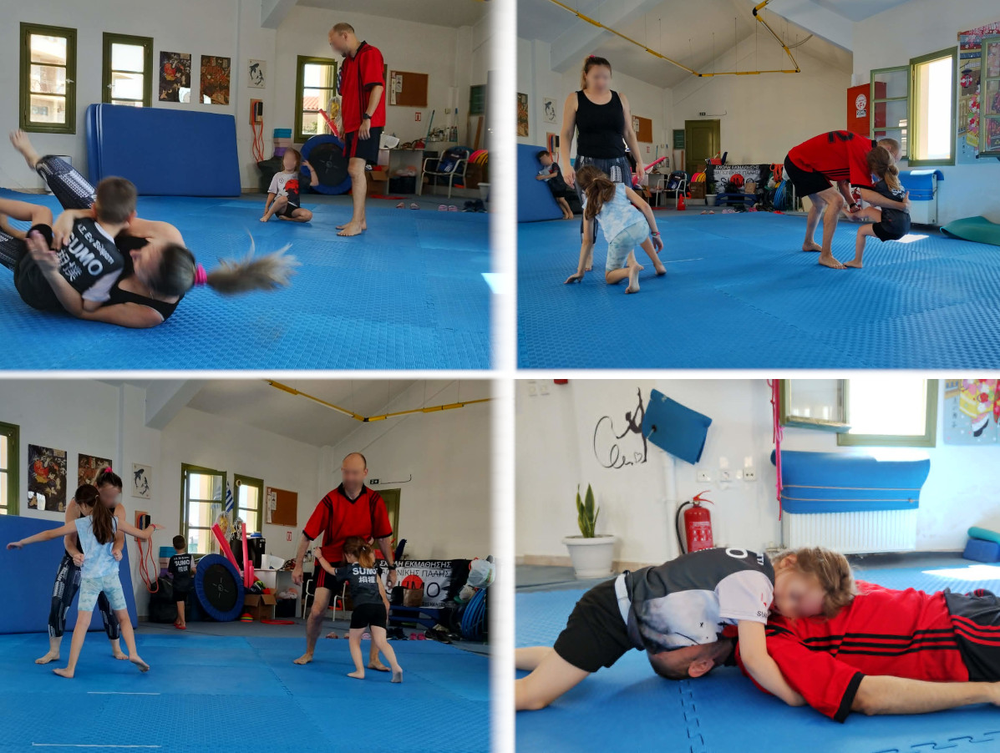
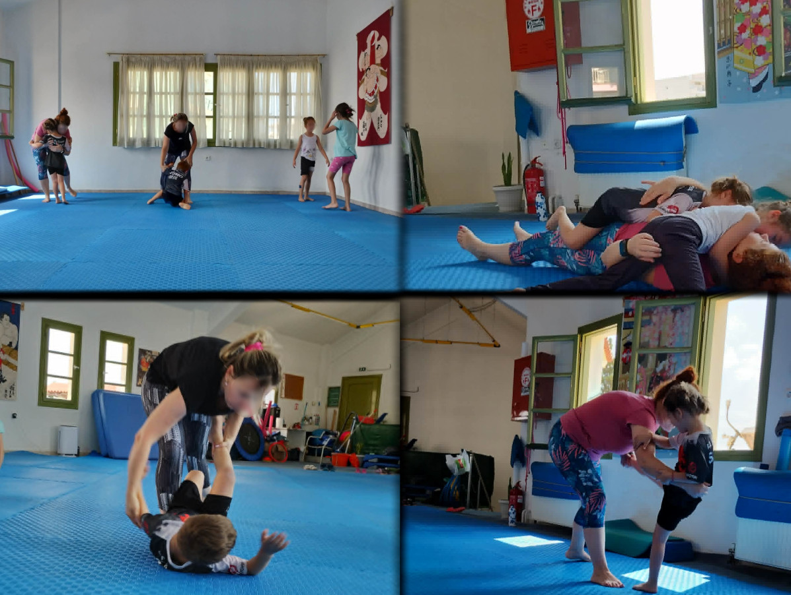

Στις 4 και 11 Ιουλίου πραγματοποιήθηκαν δύο ξεχωριστές προπονήσεις Γονέας – Παιδί, στις οποίες οι γονείς φόρεσαν αθλητική ενδυμασία, ανέβηκαν στο τατάμι και συμμετείχαν ενεργά στην προπόνηση μαζί με τα παιδιά τους. Στόχος της δράσης ήταν να γνωρίσουν από κοντά το άθλημα του σούμο, να κατανοήσουν τον τρόπο προπόνησης των μικρών αθλητών και να ζήσουν οι ίδιοι την εμπειρία μιας πλήρους προπονητικής μονάδας.
Η συμμετοχή των γονέων δημιούργησε μια ιδιαίτερα ευχάριστη ατμόσφαιρα, καθώς παιδιά και ενήλικες συνεργάστηκαν, γέλασαν και προπονήθηκαν μαζί. Για τα παιδιά ήταν μια ξεχωριστή εμπειρία να μοιραστούν το αγαπημένο τους άθλημα με τους γονείς τους, ενώ οι γονείς είχαν την ευκαιρία να διαπιστώσουν στην πράξη ότι το σούμο είναι ένα άθλημα ασφαλές, οργανωμένο και ιδιαίτερα ωφέλιμο για τη συνολική φυσική ανάπτυξη.
Κατά τη διάρκεια της προπόνησης παρουσιάστηκαν βασικά στοιχεία τόσο του σούμο όσο και του τζούντο, ώστε οι συμμετέχοντες να αποκτήσουν μια ολοκληρωμένη εικόνα των δεξιοτήτων που αναπτύσσουν οι αθλητές.
Οι ασκήσεις προσαρμόστηκαν στις δυνατότητες όλων των συμμετεχόντων, δίνοντας έμφαση στη σωστή τεχνική, στην ασφάλεια και στη συνεργασία.
Πολλοί γονείς είχαν μέχρι σήμερα παρακολουθήσει μόνο τις προπονήσεις των παιδιών τους από την εξέδρα. Αυτή τη φορά όμως συμμετείχαν οι ίδιοι στο μάθημα και ανακάλυψαν ότι το σούμο δεν βασίζεται αποκλειστικά στη δύναμη, αλλά απαιτεί ισορροπία, συντονισμό, σωστή τεχνική και έλεγχο του σώματος.
Μέσα από τις ασκήσεις και τους φιλικούς αγώνες αντιλήφθηκαν πόσο απαιτητική είναι η προπόνηση, αλλά ταυτόχρονα πόσο ευχάριστη και ασφαλής μπορεί να είναι όταν πραγματοποιείται με σωστή καθοδήγηση. Επίσης, συνειδητοποίησαν έντονα πως το σούμο είναι άθλημα επαφής, δηλαδή η απόσταση με τον αντίπαλο μειώνεται για να εφαρμοστούν οι ρίψεις του σούμο. Αυτό συνεπάγεται αποτελεσματικές τεχνικές σε πραγματικές συνθήκες συμπλοκής, σε κοντινή απόσταση.
Στο τέλος της προπόνησης οι γονείς παρακολούθησαν τους μικρούς αθλητές να αγωνίζονται μεταξύ τους, βλέποντας στην πράξη τις τεχνικές που είχαν διδαχθεί κατά τη διάρκεια του μαθήματος.
Ήταν μια εξαιρετική ευκαιρία να διαπιστώσουν τη βελτίωση των παιδιών, την αυτοπεποίθηση που αποκτούν μέσα από την προπόνηση και την πρόοδό τους στην τεχνική, στη συνεργασία και στην αθλητική συμπεριφορά.
Οι δύο προπονήσεις «Γονέας – Παιδί» ολοκληρώθηκαν μέσα σε ιδιαίτερα θετικό κλίμα, με πολλά χαμόγελα, ενθουσιασμό και όμορφες στιγμές για μικρούς και μεγάλους. Η ενεργή συμμετοχή των γονέων ενίσχυσε ακόμη περισσότερο τη σχέση τους με το άθλημα και έδειξε πως οι κοινές αθλητικές δραστηριότητες μπορούν να αποτελέσουν μια πολύτιμη εμπειρία για ολόκληρη την οικογένεια.

